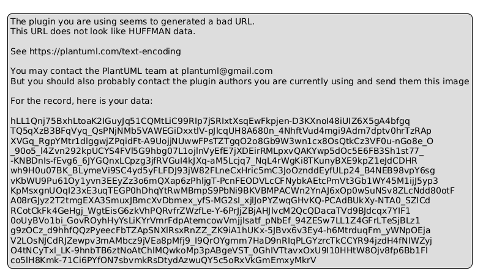
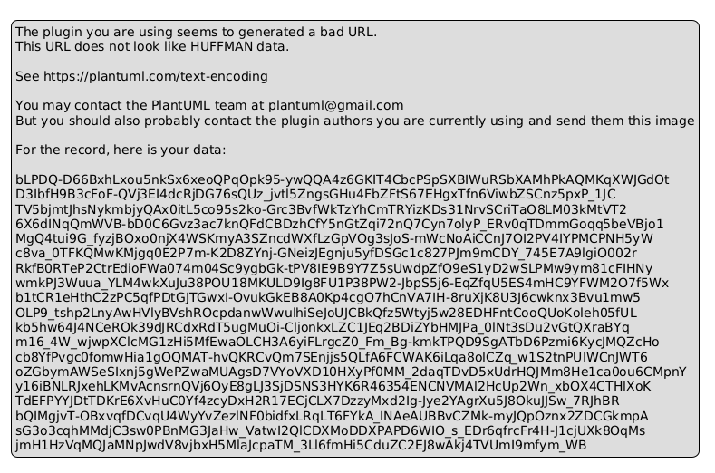
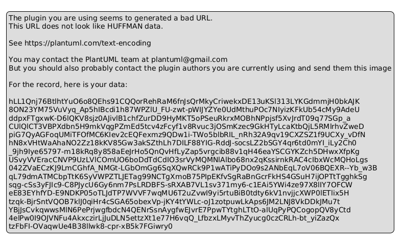
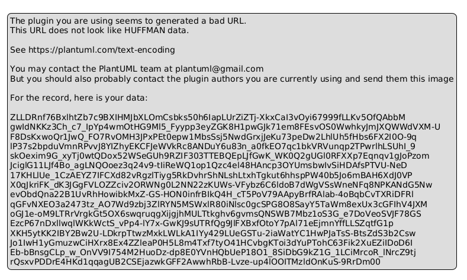
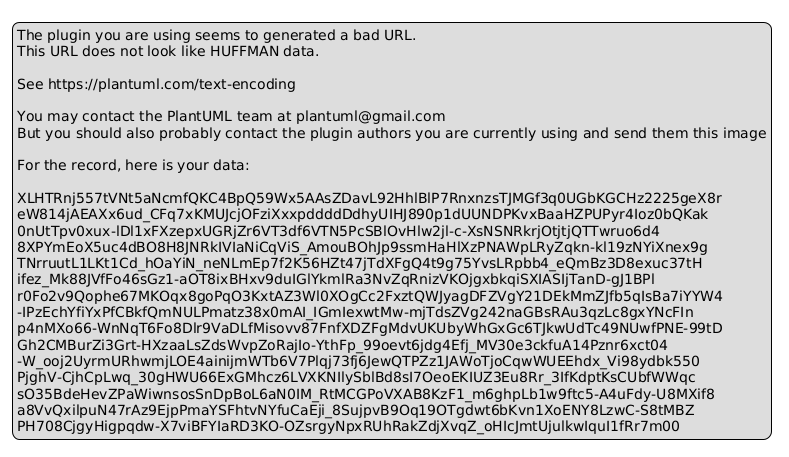

1. MỤC TIÊU & PHƯƠNG PHÁP XÂY DỰNG SƠ ĐỒ HOẠT ĐỘNG
Sơ đồ hoạt động (Activity Diagram) trong Lab 3 trực quan hóa luồng công việc (Workflow) và luồng điều khiển nghiệp vụ giữa các tác nhân và hệ thống máy chủ VAMOS STORE. Mỗi sơ đồ đều sử dụng kỹ thuật Swimlanes (Làn bơi) để phân định ranh giới trách nhiệm rõ ràng:
- Client (Người dùng): Thao tác nhập liệu trên trình duyệt, gửi yêu cầu qua giao thức HTTP.
- Server (Hệ thống backend Express): Tiếp nhận request, kiểm tra validation, mã hóa dữ liệu, áp dụng Business Logic.
- Database (Cơ sở dữ liệu): Thực thi truy vấn, khóa bi quan, quản lý giao dịch an toàn (Transaction).
2. CHI TIẾT 5 SƠ ĐỒ HOẠT ĐỘNG CỐT LÕI
2.1. Quy trình Đăng ký & Đăng nhập (AD-01: Auth Flow)
Quy trình tiếp nhận thông tin người dùng, kiểm tra định dạng email bằng regex, đối soát trùng email trong CSDL, băm mật khẩu bảo mật bằng thư viện bcrypt (10 rounds) và tái tạo session máy chủ chống lỗi Session Fixation:

2.2. Quy trình Mua hàng & Đặt hàng COD (AD-02: Checkout COD Flow)
Mô tả toàn bộ chuỗi hành động đặt hàng thanh toán khi nhận hàng. Hệ thống áp dụng cơ chế khóa bi quan SELECT ... WITH (UPDLOCK, ROWLOCK) bên trong một Transaction cô lập để trừ số lượng tồn kho của từng biến thể giày, triệt tiêu lỗi bán vượt tồn kho (Overselling):

2.3. Quy trình Máy trạng thái xử lý Đơn hàng (AD-03: Order State Machine)
Vận hành đơn hàng tuần tự 5 bước theo ma trận trạng thái nghiêm ngặt: PENDING $\rightarrow$ CONFIRMED $\rightarrow$ PROCESSING $\rightarrow$ SHIPPING $\rightarrow$ COMPLETED. Đơn hàng COD chỉ được chuyển sang payment_status = 'PAID' khi đơn hàng đã hoàn tất giao thành công:

2.4. Quy trình Hủy đơn hàng và Hoàn kho tự động (AD-04: Order Cancellation)
Khách hàng chỉ được hủy đơn khi đơn còn ở trạng thái PENDING. Hệ thống thực hiện hoàn kho tự động trong Transaction và khôi phục lượt sử dụng mã giảm giá:

2.5. Quy trình Kiểm kê & Điều chỉnh kho Admin (AD-05: Inventory Adjustment)
Quản trị viên kiểm kê kho hàng định kỳ, cập nhật số lượng tồn kho mới và bắt buộc ghi rõ nguyên nhân kiểm toán vào bảng inventory_transactions:

3. KẾT LUẬN
Toàn bộ 5 quy trình nghiệp vụ đã được mô hình hóa chính xác, thể hiện rõ trách nhiệm của từng bộ phận, các điểm rẽ nhánh và cơ chế đảm bảo tính toàn vẹn dữ liệu cho website VAMOS STORE.